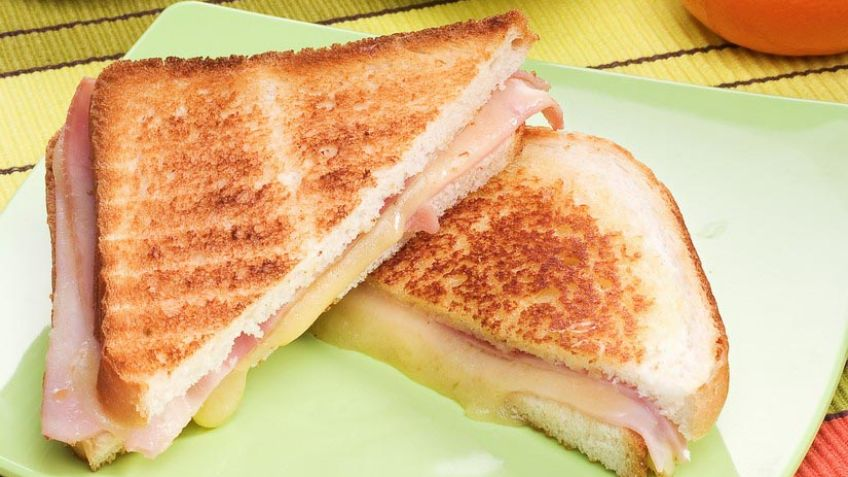

Volver al índice
Tostado de jamón y queso

Descripción
Ideal receta ya sea para un desayuno o una merienda. Simplemente pan, jamon y queso, sumado a
un breve tostado.
Ingredientes (para una porción)
- Pan a elección
- 2 fetas de jamón
- 2 fetas de queso
Instrucciones
- Introducir entre dos rodajas de pan las fetas de jamón y queso
- Comprimir levemente el sandwich con las manos
- Tostar vuelta y vuelta el sandwich en una plancha, sartén o similar a tal fin
- Retirar del fuego y servir mientras está el tostado caliente
- Disfrutarlo!